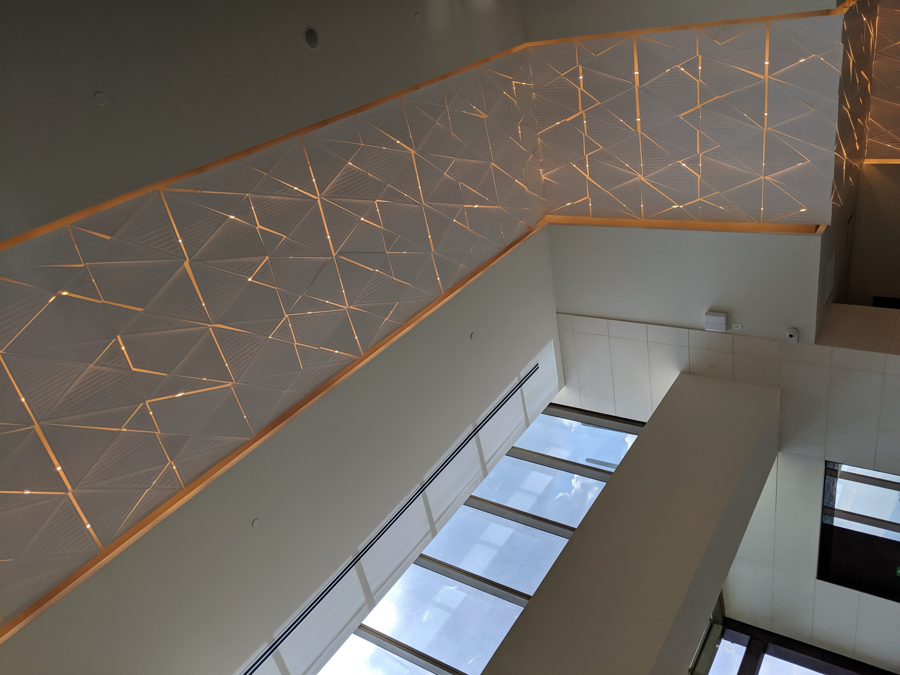
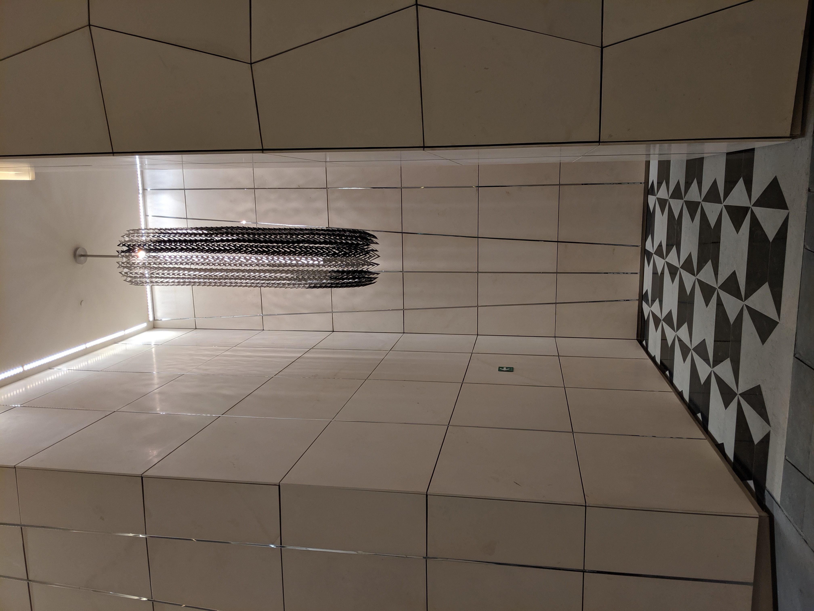
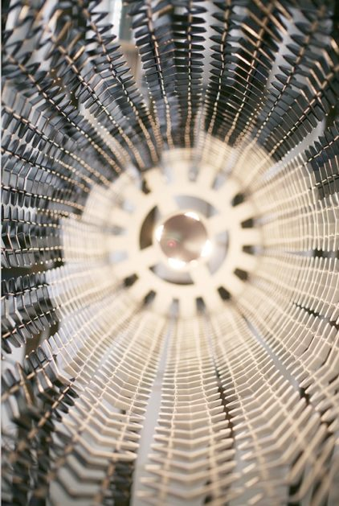
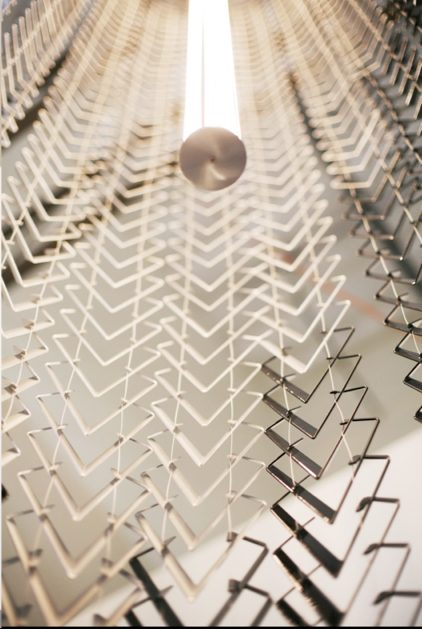
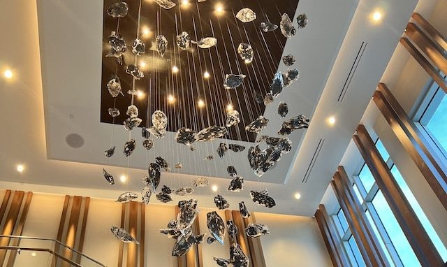
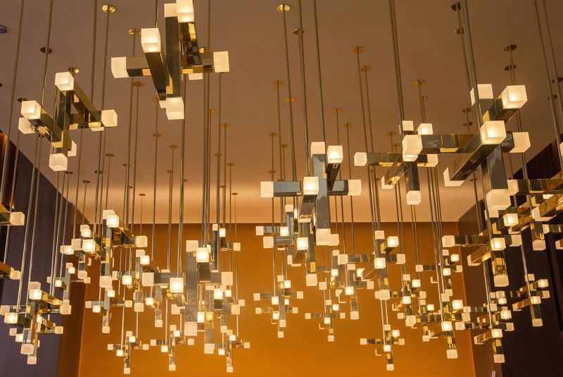
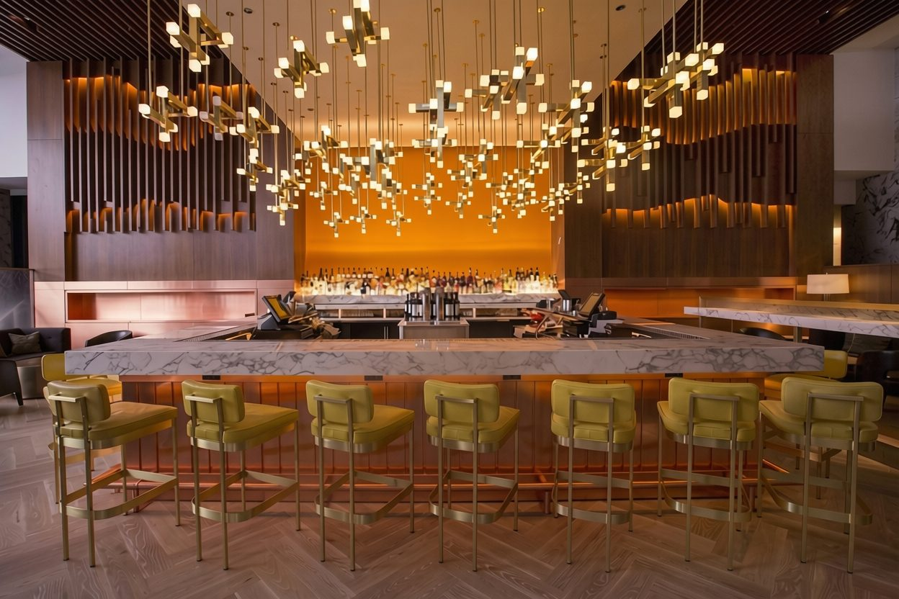

Mexico City — Lobby
A skin of light that anchors Mikko into the building. Drawing from the language of the architecture and the adjacent sculpture, the lobby installation is a constantly changing tessellation of Corian panels, each carved at varying depths and densities, each mounted at a different angle. The variations in carving alter the translucency of the surface, so the light that passes through is never uniform. The building and the sculpture become one thing.
Corian — LED




Mexico City — Porte Cochere
Hanging chains of aluminum drop from the ceiling like vines, accentuating the verticality of the space. The repetition of links creates a rhythm that softens the architecture and pulls it toward something more organic. Light travels through each chain, shifting with movement and angle.
Aluminum — LED







Atlanta
Atlanta has burned twice. Sherman reduced it to ash in 1864. The Great Fire of 1917 took what had been rebuilt. Each time, the city rose from what remained. This commission is a meditation on that resilience — blown glass embers suspended in metal, catching and releasing light the way fire does. A city born twice from flame.
Blown glass — Metal



Chicago
A suspended constellation of bronze and glass, drawing from the visual languages that shaped Chicago's skyline. The geometry of Art Deco, the clarity of Mid-Century Modern, projected forward. Light moves through each glass element independently, animating the composition the way the city animates its streets.
Bronze — Glass — LED


